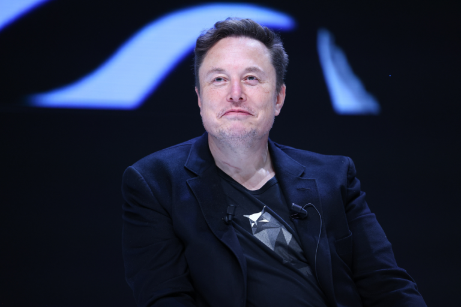

Elon Musk Diz Que Chatbot Grok 3 Está em Estágios Finais
A previsão de lançamento é em 1 ou 2 semanas, segundo Musk.

Elon Musk disse nesta quinta-feira (13) que o chatbot de inteligência artificial Grok 3 está nos estágios finais de desenvolvimento e será lançado em uma ou duas semanas.
“O Grok 3 tem recursos de raciocínio muito poderosos, portanto, nos testes que fizemos até agora, o Grok 3 está superando qualquer coisa que tenha sido lançada, que tenhamos conhecimento, portanto, isso é um bom sinal”, disse ele em uma videochamada dirigida à Cúpula Mundial de Governos em Dubai.